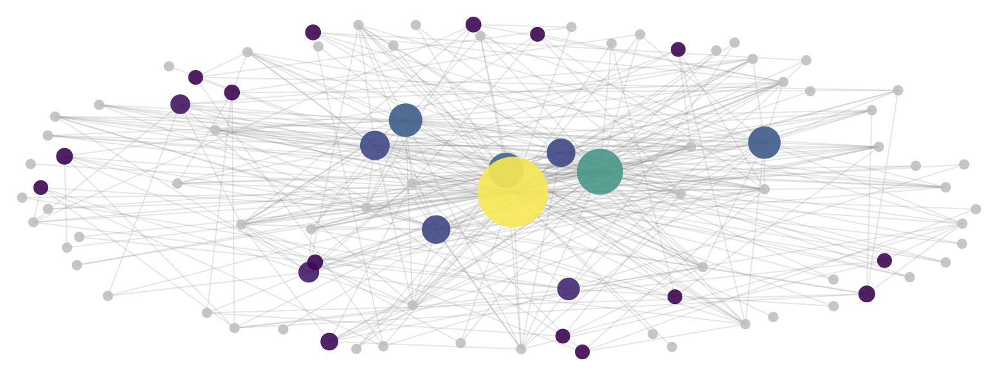

conda activate PIC16B-25W
Introduction
The TMDB (The Movie Database) is a comprehensive online database that provides detailed information on movies, TV shows, actors, and production crews. In this project, we will develop a Scrapy-based web crawler to extract movie and actor data from TMDB. The crawler is designed to navigate from a movie’s main page to its full cast list, retrieve actor profiles, and extract their filmographies. We will employ CSS selectors for precise data extraction, implement depth-controlled crawling to avoid unnecessary requests, and optimize request handling to improve performance. Finally, we will use the extracted data to identify patterns in shared actor collaborations across movies using NetworkX. Through this approach, we demonstrate how Scrapy can be leveraged to build a structured dataset for analyzing relationships within the film industry.
Setting Up the Webscraper
In this section, we’ll first initialize the Scrapy framework, examine how TMDB organizes its data, and prepare our project for extracting meaningful movie-actor relationships.
Initializing the Scrapy Project
We’ll start by creating a new Scrapy project.
We can do this by opening the terminal and activating the relevant Python environment:
Next, create a Scrapy project by running:
scrapy startproject TMDB_scraper
cd TMDB_scraperRunning this will create a folder named “TMDB_scraper” with the following contents inside:
TMDB_scraper/
│── scrapy.cfg
└── TMDB_scraper/
├── spiders/
│ └── tmdb_spider.py # Our main spider script
├── settings.py # Scrapy settings file
├── middlewares.py
├── pipelines.py
└── __init__.py We’ll only really need the tmdb_spider.py file, where we will write the logic for our scraper. We’ll also make minor changes to the setting of our spider in settings.py.
Understanding the TMDB Website Structure
In order to extract the correct data, we need to analyze how TMDB organizes and displays its information. A movie page typically exhibits the following structure:
Movie Starting Page
Once on a movie’s starting page, we observe that the URL contains a movie ID. Our project will focus on Harry Potter and the Sorcerer’s Stone. the TMDB URL for Harry Potter and the Sorcerer’s Stone is:
https://www.themoviedb.org/movie/671-harry-potter-and-the-philosopher-s-stone/The movie ID 671-harry-potter-and-the-philosopher-s-stone will be passed as an argument to our scraper.
Navigate to the Cast & Crew Page
Next we want to click on the “Full Cast & Crew” link which takes us to the following page:
https://www.themoviedb.org/movie/671-harry-potter-and-the-philosopher-s-stone/castNotice that the URL is the same as the previous page, except for the /cast appended to the end. This page is where our spider will extract the list of actors (ignoring crew members).
Extracting Actor Profiles
Clicking on an actor’s name leads to the actor profile page:
https://www.themoviedb.org/person/10980-daniel-radcliffeOn this page, we need to find the “Acting” section, which contains a list of movies and TV shows the actor has performed in. There are multiple sections such as Production, Writing, and Acting. We must only extract movie titles listed under “Acting”.
Configuring the Scrapy Crawler Settings
To prevent excessive data requests while we are testing the crawler, we’ll temporarily add the following line in settings.py:
CLOSESPIDER_PAGECOUNT = 20This stops the spider after 20 pages so we don’t accidentally send too many requests while debugging.
When scraping, we’ll look for the 200 status. If we run into the 403 Forbidden error when TMDB detects that we’re a bot. A simple fix is changing the User-Agent in settings.py:
USER_AGENT = "Mozilla/5.0 (Windows NT 10.0; Win64; x64) AppleWebKit/537.36 (KHTML, like Gecko) Chrome/112.0.0.0 Safari/537.36"This makes our scraper appear as a normal browser request, reducing the chance of being blocked.
Building the Scrapy Spider
Now that our Scrapy project is set up and we have analyzed TMDB website structure, we can implement the three parsing methods in our spider:
parse(): Navigates from the movie page to the Full Cast & Crew page.parse_full_credits(): Extracts the list of actors in the movie.parse_actor_page(): Extracts movies from the actor’s Acting section.
Each of these methods will systematically extract the data we need. We’ll write them into the tmdb_spider.py file.
Extracting Actor Links
parse_full_credits():
Once we reach the Full Cast & Crew page, we need to extract only the actors listed in the cast section.
Implementation:
def parse_full_credits(self, response):
"""
Extracts actors from the Full Cast & Crew page
and yields requests for each actor’s page.
"""
# Selects all actor profile links <a> elements
# inside the cast list <ol class="people credits">.
# Extracts the href attribute, which contains the link to the actor’s TMDB page.
actor_links = response.css('ol.people.credits li[data-order] div.info a[href^="/person/"]::attr(href)').getall()
# Yields a new request for each actor’s profile page, calling parse_actor_page().
for link in actor_links:
yield scrapy.Request(url=response.urljoin(link), callback=self.parse_actor_page)This method works by:
- Selecting all actor profile links
<a>elements inside the cast list<ol class="people credits">. - Extracting the href attribute, containing the link to the actor’s TMDB page.
- Yielding a new request for each actor’s profile page, calling
parse_actor_page()for further processing.
This method ensures that only actors (not crew members) are processed.
Extracting Movie and TV Show Titles
parse_actor_page()
On an actor’s TMDB page, movies and TV shows are categorized under multiple sections like Acting, Writing, Directing, and Producing. We must extract only titles under the “Acting” section.
Implementation:
def parse_actor_page(self, response):
"""
Extracts actor's name and their acting roles, yielding unique movie/TV titles.
"""
# Selector extracts actor's name
actor_name = response.css("h2.title a::text").get()
# Selector extracts section headers
section_headers = response.css("div.credits_list h3::text").getall()
# Locates the "Acting" section
acting_index = section_headers.index("Acting")
# Get all tables and extract titles from the Acting section
all_tables = response.css("div.credits_list table.card")
acting_table = all_tables[acting_index]
titles = acting_table.css("a.tooltip bdi::text").getall()
for movie_or_TV_name in titles:
yield {"actor": actor_name, "movie_or_TV_name": movie_or_TV_name}This method works by:
- Extracting the actor’s name from the
<h2 class="title">section. - Finding all section headers (e.g., “Production”, “Acting”) to locate the Acting section.
- Finding the matching table for “Acting” and extracting all movie/TV show titles inside.
- Yielding a dictionary containing (actor, movie/TV show) pairs.
This method ensures that only acting credits are included.
Running the Scraper
Before we run our scraper, we can check that our CSS selectors are working by running this in the terminal:
scrapy shell "your_page_link"Within the shell for each page, we can run each selector in our three parse methods to see if it yields the desired output.
After checking our selectors, we are ready to run the scraper with the following line:
scrapy crawl tmdb_spider -o results.csv -a subdir=671-harry-potter-and-the-philosopher-s-stoneThis command will:
- Start at the Harry Potter and the Sorcerer’s Stone movie page.
- Extract all actors from the Full Cast & Crew page.
- Visit each actor’s profile and extract all movies in which they have acted.
- Save the results in
results.csv.
Our CSV file should look like:
| actor | movie_or_TV_name | |
|---|---|---|
| 0 | Paul Marc Davis | Arthur & Merlin: Knights of Camelot |
| 1 | Paul Marc Davis | Class |
| 2 | Paul Marc Davis | Son of God |
| 3 | Paul Marc Davis | The Bible |
| 4 | Paul Marc Davis | The Sky in Bloom |
| ... | ... | ... |
| 3121 | Rupert Grint | The View |
| 3122 | Rupert Grint | GMTV |
| 3123 | Rupert Grint | The Tonight Show with Jay Leno |
| 3124 | Rupert Grint | An Audience with... |
| 3125 | Rupert Grint | Today |
3126 rows × 2 columns
Now that we have successfully scraped the data, the next step is to analyze the results and create a visualization of shared actors across movies. In the next section, we will:
- Filter the data to find movies with the most shared actors.
- Create a network graph to visually represent relationships between movies and actors.
Visualizing Movie Recommendations
Once the scraper is complete, we need to analyze the results and present them in a meaningful way. Since our dataset consists of movies and actors, a network graph is an intuitive choice for visualization. A network graph allows us to see which movies share actors and how strongly they are connected.
Processing the Scraped Data
The CSV output from our Scrapy spider contains two columns:
- Actor: The name of the actor.
- Movie or TV Show: The name of the movie or TV show they appeared in.
To build a movie recommendation system, we’ll look for movies that share multiple actors by the following:
- Grouping actors by movie: Create a mapping of each movie to the list of actors who starred in it.
- Compute shared actors: Identify pairs of movies that share actors.
- Filter based on shared actor count: We only include movies that share at least 5 actors in the final visualization.
Building the Network Graph
We’ll use NetworkX to create a graph where:
- Nodes represent movies and actors.
- Edges exist between a movie node and an actor node if the actor starred in the movie.
- Movies with more shared actors are emphasized by larger node size and distinct colors.
Additionally, in order to enhance readability, we’ll apply:
- Node scaling to make movies with more shared actors appear larger.
- Color encoding to assign colors to movie nodes using a thermal colormap, where warmer colors (yellow) indicate more shared actors and cooler colors less.
Deploying the Movie Network Graph
First, we’ll need to import the necessary packages to create our visualization:
import networkx as nx
import plotly.graph_objects as go
import pandas as pd
import random
import matplotlib.pyplot as plt
import numpy as npNext, we will write a function that will take our CSV file and a minimum number of shared actors per movie as inputs (only recommend movies and TV shows with high actor correlation).
The following function plots our interactive movie network graph with our desired specs:
def generate_movie_actor_network(csv_file, min_shared_actors):
"""
Generates a movie-actor network graph from a CSV file containing movie and actor relationships.
"""
# Loads in the dataset
df = pd.read_csv(csv_file)
# Create a graph
G = nx.Graph()
# Build the mapping of movies to actors
movie_actor_map = {}
for _, row in df.iterrows():
movie = row["movie_or_TV_name"]
actor = row["actor"]
if movie not in movie_actor_map:
movie_actor_map[movie] = set()
movie_actor_map[movie].add(actor)
# Identify valid movies that share at least `min_shared_actors` actors with another movie
valid_movies = set()
for movie1 in movie_actor_map:
for movie2 in movie_actor_map:
if movie1 != movie2:
shared_actors = movie_actor_map[movie1] & movie_actor_map[movie2]
if len(shared_actors) >= min_shared_actors:
valid_movies.add(movie1)
valid_movies.add(movie2)
# Compute the number of unique actors in each valid movie
movie_shared_counts = {
movie: len(movie_actor_map[movie]) for movie in valid_movies
}
max_shared = max(movie_shared_counts.values(), default=1) # Avoid division by zero
# Normalize sizes (scale between 10 and 55 for visualization purposes)
def scale_size(value, min_size=10, max_size=55):
return min_size + ((value - 3) / (max_shared - 3)) * (max_size - min_size) if max_shared > 3 else min_size
# Assign movie colors based on shared actor count using thermal color scale.
norm = plt.Normalize(vmin=min(movie_shared_counts.values(), default=0), vmax=max_shared)
thermal_colormap = plt.get_cmap("viridis")
movie_colors = {
movie: f'rgb({int(r*255)},{int(g*255)},{int(b*255)})'
for movie, (r, g, b, _) in zip(
movie_shared_counts.keys(),
[thermal_colormap(norm(v)) for v in movie_shared_counts.values()]
)
}
# Add nodes and edges to the graph
for movie in valid_movies:
G.add_node(movie, type="movie", size=scale_size(movie_shared_counts[movie]), color=movie_colors[movie])
for movie in valid_movies:
for actor in movie_actor_map[movie]:
if actor not in G:
G.add_node(actor, type="actor", size=8, color="lightgray") # Smaller nodes for actors
G.add_edge(movie, actor)
# Compute graph layout for better spacing
pos = nx.spring_layout(G, seed=42, k=1.7) # 'k' controls the node spacing
# Create scatter plot for nodes
node_trace = []
for node in G.nodes():
node_type = G.nodes[node]["type"]
x, y = pos[node]
color = G.nodes[node]["color"]
size = G.nodes[node]["size"]
# Set hover text for nodes
hover_text = node if node_type == "actor" else f"{node}<br>Shared Actors: {movie_shared_counts[node]}"
node_trace.append(go.Scatter(
x=[x], y=[y],
mode="markers" if node_type == "actor" else "markers+text",
marker=dict(size=size, color=color, opacity=0.9, showscale=False),
hovertext=hover_text,
textposition="top center" if node_type == "movie" else None
))
# Create edges for connections between movies and actors
edge_trace = []
for edge in G.edges():
x0, y0 = pos[edge[0]]
x1, y1 = pos[edge[1]]
edge_trace.append(go.Scatter(
x=[x0, x1, None], y=[y0, y1, None],
mode="lines",
line=dict(width=1, color="gray"),
hoverinfo="none",
opacity=0.2 # Light transparency for better visibility
))
# Add a color bar to indicate shared actors
colorbar_trace = go.Scatter(
x=[None], y=[None],
mode='markers',
marker=dict(
colorscale="viridis", # Thermal color scheme
cmin=min(movie_shared_counts.values(), default=0),
cmax=max_shared,
showscale=True,
colorbar=dict(
title="# of Shared Actors",
titleside="right", # Aligns title to the right
tickmode="array",
tickvals=list(range(0, int(max_shared) + 1, 10)),
ticktext=[str(tick) for tick in range(0, int(max_shared) + 1, 10)],
tickfont=dict(size=10),
len=1,
thickness=20,
outlinewidth=1.3,
xpad=6,
x=0.97
)
),
hoverinfo='none'
)
# Create final figure
fig = go.Figure(data=edge_trace + node_trace + [colorbar_trace])
fig.update_layout(
title=dict(
text="Movie Recs: Movie-Actor Network Graph",
x=0.427,
xanchor="center",
yanchor="top",
font=dict(size=20)
),
showlegend=False,
hovermode="closest",
margin=dict(b=20, l=5, r=140, t=40),
xaxis=dict(showgrid=False, zeroline=False, showticklabels=False),
yaxis=dict(showgrid=False, zeroline=False, showticklabels=False),
plot_bgcolor="white",
paper_bgcolor="white"
)
# Display the graph
return figWe can call our plotting function with our CSV and minimum shared actors by running the following:
fig = generate_movie_actor_network(csv_file = "results.csv",
min_shared_actors=5)
fig.show()Interpretting the Visualization
By analyzing the graph, we can identify:
- Highly interconnected movies: Franchises and sequels (e.g., Harry Potter Series) tend to cluster together.
- Unexpected connections: Some movies share actors despite belonging to different genres.
- Strongest recommendations: The best recommendations are movies that share the most actors with the chosen starting movie.
This approach demonstrates how web scraping and network analysis can be combined to generate meaningful movie recommendations based purely on cast overlap, without using machine learning.
Resources Used (For NetworkX Visualization):
- https://plotly.com/python/network-graphs/
- https://community.plotly.com/t/is-plotly-able-to-integrate-with-networkx-graph/59115